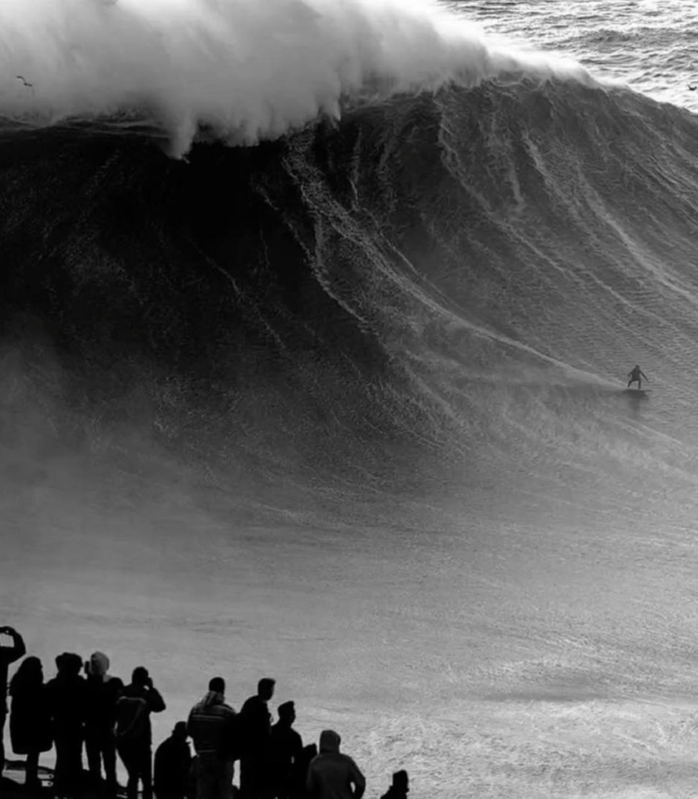

Your Stupidity Is Factored In
February 15, 2026 • 1 min read

Lately I've been facing challenges where there's no clear direction, maybe no right answer at all. My solution to working with the unknown has been to take a lot of small bets. Each one has limited downside but potentially high upside. I'm not staking everything on one big move. So far it's worked well. The losses are small and some of the wins have been very fruitful.
But not every challenge can be broken into small bets. Sometimes I have to make the big call with incomplete information, and that's where my system crumbles.
In those moments I start questioning whether I have what it takes to navigate what's in front of me. I'm afraid of making a stupid mistake that I can't walk back. Then I found this comforting saying: "When God called you to it, He already factored in your stupidity."
I think beyond strategy we need some faith. If a challenge is in front of us, we're supposed to be capable of tackling it. Even the stupid moves along the way. Otherwise it wouldn't be there.